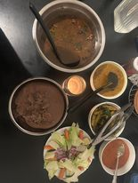

Cooking
Cooking is my absolute passion. Despite that, baking is still enjoyable! Recently, I prepared Dhido, a Nepalese traditional dish. It is made by bringing heated water to a boil in a skillet, adding flour, and stirring constantly. The original ingredients for dhindo are buckwheat (fapar) or millet (kodo), however wheat and corn flour are now frequently used.
